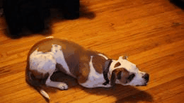

Simple Tricks
|
Steps and information required to make your dog roll over
Roll over is a cute trick that is easy and fun to teach your dog. It is helpful if your dog knows the “down” command before you start teaching this trick. 1. Ask your dog to perform a “down” position in front of you. 2. Kneel beside your dog and hold a small, yummy treat to the side of his head near his nose. 3. Move your hand from his nose toward his shoulder luring him to roll flat on his side. 4.Try this a few times and praise and treat each time he follows the treat and lies flat on his side with his head on the floor. 5. Now continue the movement of your hand, holding a treat, once he is lying flat, from his shoulder to his backbone. This should cause him to roll onto his back. 6. Continue the moving the treat hand so he rolls onto the other side. 7. When he is consistently following the treat all the way around in a “roll over,” add the verbal cue “Roll Over.” 8. Gradually reduce the hand motion and treat lure, until your dog can perform the trick on just a verbal cue. 9. Remember to still praise and reward his hard work! |
|

|
|---|
Click here to go to previous page